Aniket Roy, Ph.D.
Researcher, Media Analytics Department
About
I am a Researcher in the Media Analytics Department at NEC Laboratories America, where my work focuses on computer vision, multimodal learning, and generative models for large-scale visual understanding.
My research investigates how machines can interpret and reason about images and video, with particular emphasis on vision-language learning, data-efficient recognition, and generative techniques that enhance visual perception and representation. My broader goal is to advance next-generation visual intelligence systems for media analytics and multimodal machine learning.
I received my Ph.D. in Computer Science from Johns Hopkins University, advised by Prof. Rama Chellappa, and my M.S. (by Research) in Computer Science and Engineering from the Indian Institute of Technology Kharagpur. My work has appeared at leading venues including CVPR, NeurIPS, ICCV, and WACV. I was invited to the ICCV 2025 and AAAI 2026 Doctoral Consortiums and was named an Amazon Fellow through the JHU + Amazon Initiative for Interactive AI. During my doctoral studies I held research internships at Qualcomm, SRI International, Amazon AWS AI, and MERL.
News
- Aug 2025Selected for the ICCV 2025 and AAAI 2026 Doctoral Consortiums.
- Jun 2025DuoLoRA accepted to ICCV 2025; DiffNat accepted to TMLR.
- Feb 2025Two U.S. patents filed in collaboration with Qualcomm.
- Oct 2024Cap2Aug accepted to WACV 2025; also presented at the MAR workshop at CVPR 2025.
- Jul 2024BRI3L accepted to ICIP 2024.
- Jun 2024Joined Qualcomm as a research intern.
- Dec 2023Invited talk on advances in few-shot learning at the Indian Statistical Institute, Kolkata.
- Oct 2023Named an Amazon Fellow (JHU + Amazon Initiative for Interactive AI).
- Sep 2023Certified robustness via dynamic margin maximization accepted to NeurIPS 2023.
- Sep 2023HaLP accepted to CVPR 2023.
- Jun 2023Joined SRI International as a research intern.
- Aug 2022Received the Markose Thomas Memorial Award for the best research paper in CSE, IIT Kharagpur.
- Aug 2022FeLMi accepted to NeurIPS 2022.
- Jul 2022Multimodal optimal transport for sarcasm and humor detection accepted to WACV 2022.
- Jun 2022Joined Amazon AWS AI as a research intern.
- Jun 2021PASS accepted to ICCV 2021.
- Jun 2021Joined MERL as a research intern.
Publications
* denotes equal contribution.
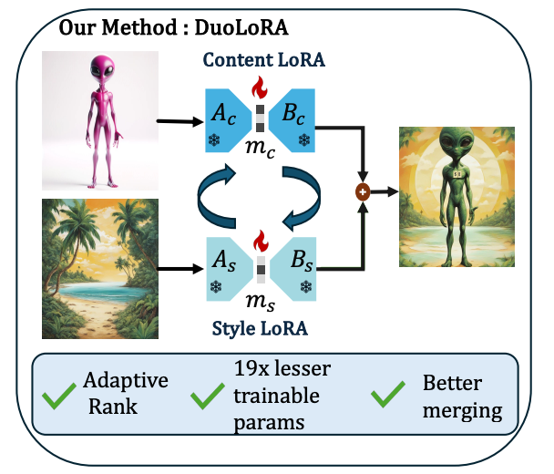
Content-style personalization of diffusion models via cycle-consistent training and layer-wise diffusion priors.
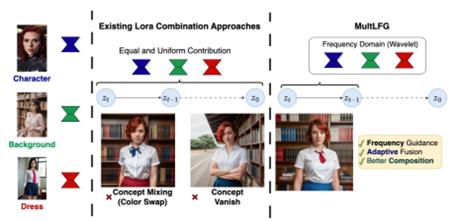
A training-free method for composing multiple LoRA adapters using frequency-domain guidance during diffusion sampling.
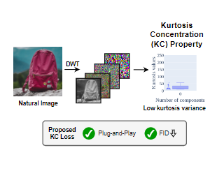
A kurtosis-based loss grounded in natural image statistics that improves the perceptual quality of diffusion-generated images.
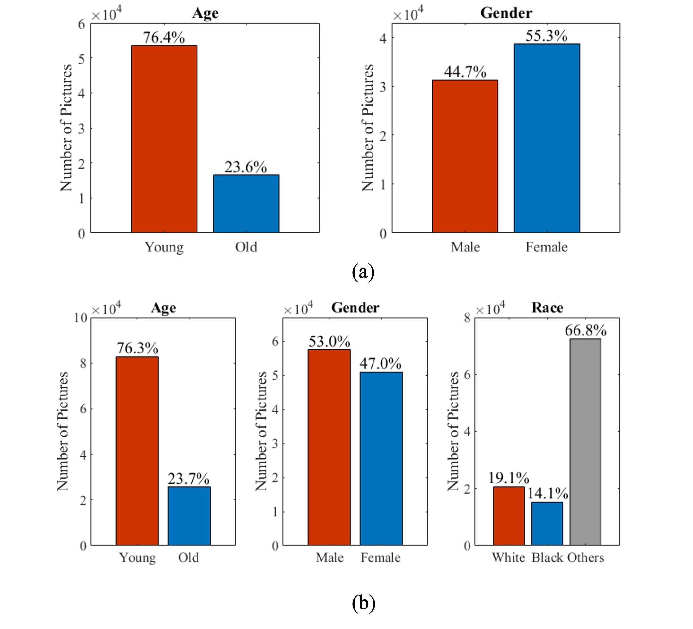
Uses diffusion-generated data to reduce demographic bias in deep classifiers.
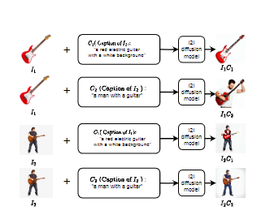
Semantic data augmentation for low-data regimes using pretrained captioning and text-to-image diffusion models.
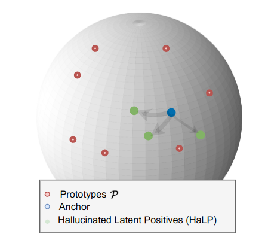
Generates hard latent positives to improve contrastive self-supervised learning of skeleton-based action encoders.
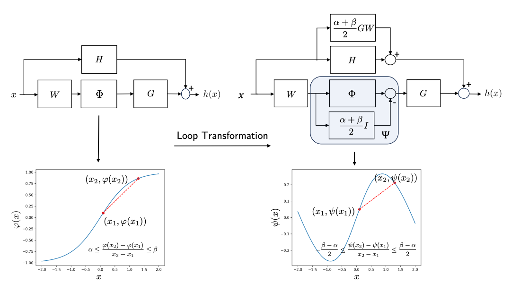
A differentiable regularizer that lower-bounds the distance of data points to the decision boundary, improving certified robustness.
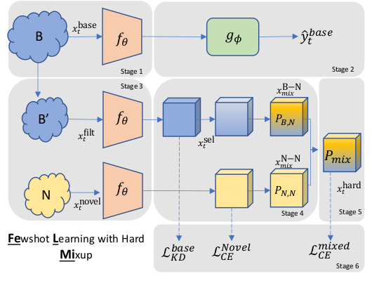
Improves few-shot classification by generating hard mixup samples that sharpen decision boundaries.
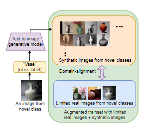
Leverages text-to-image diffusion models to synthesize and align training data for few-shot recognition.
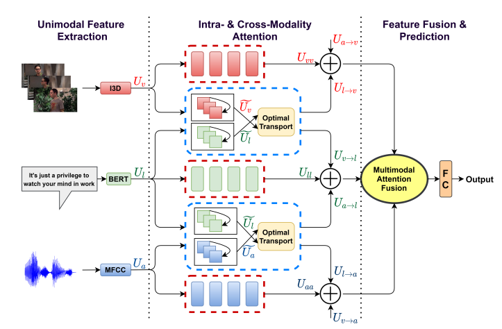
Optimal-transport-based fusion of video, audio, and text for detecting sarcasm and humor.

A benchmark dataset for brightness illusions, with an analysis of how diffusion models perceive illusory regions.
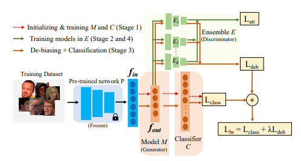
An adversarial framework that suppresses protected attributes in face descriptors to reduce demographic bias.
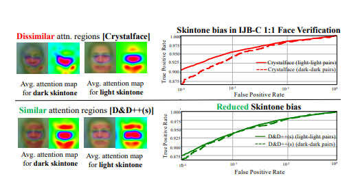
A knowledge-distillation framework for reducing demographic bias in face recognition.
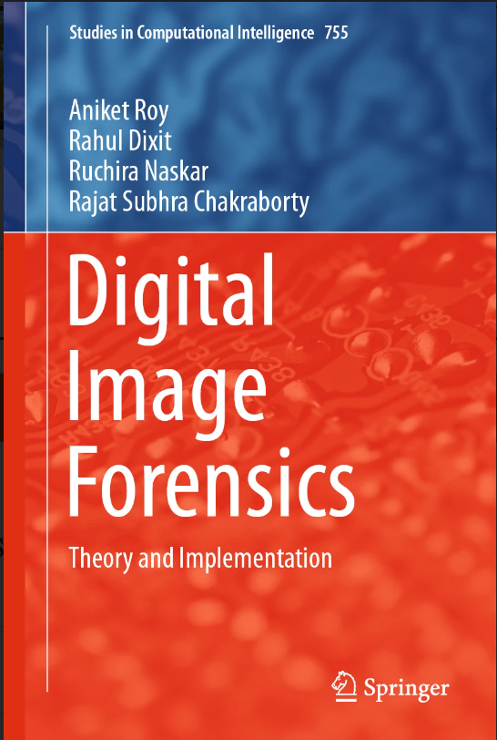
A monograph covering the theory and practice of digital image forensics.
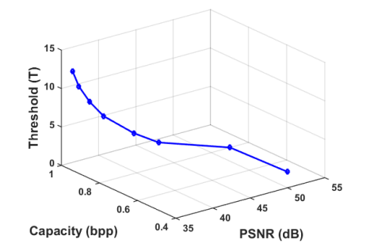
A theoretical analysis of prediction-error-expansion reversible watermarking toward optimal embedding.
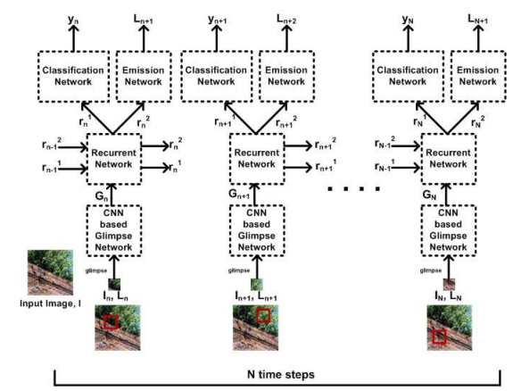
A recurrent attention model for distinguishing computer-generated from natural images.
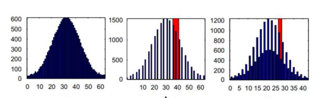
DCT residual features for detecting filtering forgery and splicing in JPEG images.
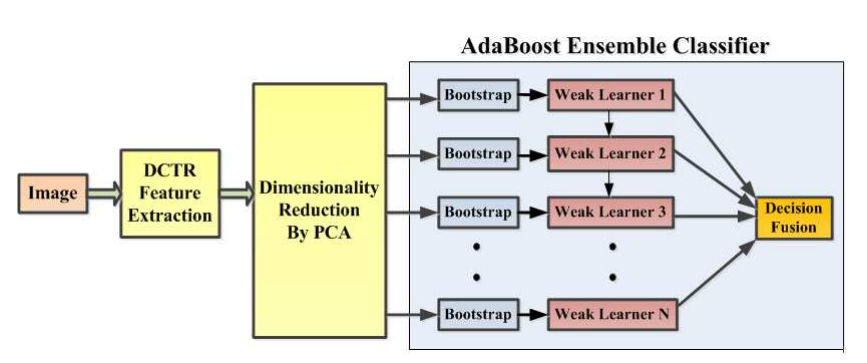
Camera source identification using DCT residue features with an ensemble classifier.
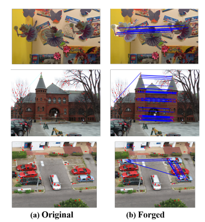
Rotated local binary pattern features to separate copy-move forgeries from visually similar genuine objects.
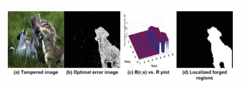
Detection and localization of JPEG forgeries based on noise correlation.
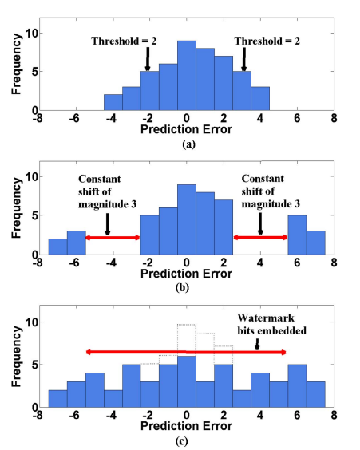
Theoretical analysis of embedding distortion in prediction-error-expansion reversible watermarking.
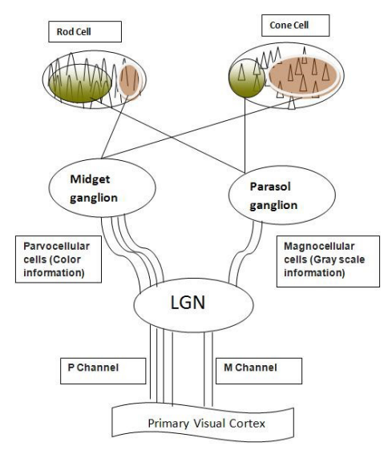
A human-visual-system-inspired watermarking scheme with a robustness analysis.
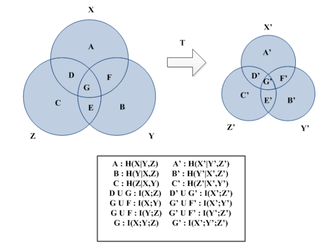
A reversible color image watermarking scheme with an information-theoretic analysis.
Honors & Awards
- Invited participant, ICCV 2025 Doctoral Consortium and AAAI 2026 Doctoral Consortium
- Amazon Fellow, JHU + Amazon Initiative for Interactive AI (2023–2024)
- Markose Thomas Memorial Award for the best research paper in CSE, IIT Kharagpur (2022)
- Best Paper Award, International Workshop on Digital-Forensics and Watermarking (IWDW 2016)
- IEEE Signal Processing Society Travel Grant, ICIP 2017
- Microsoft Travel Grant, CVPR 2017 and IWDW 2016
- Scheme of Scholarship for College and University Students (undergraduate)